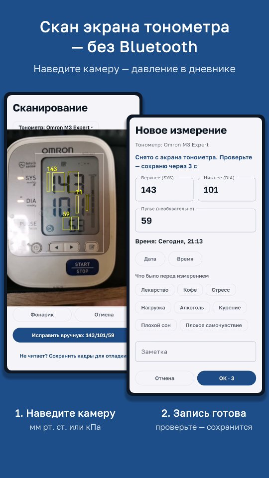

Ритм давления
Дневник давления и пульса для Android — без рекламы. Наведите камеру на экран тонометра, и давление с пульсом сами попадут в дневник.

- Любой способ записи: скан экрана тонометра, ручной ввод, Andon KD-5907 из Mi Home, давление других приложений из Health Connect.
- Графики, средние утром и вечером, категории давления ВОЗ, календарь месяца.
- PDF для врача за любой период — с графиком и средними на первой странице.
- Запись в Health Connect — давление увидит ЕМИАС.ИНФО.
- Напоминания утром и вечером. Журнал хранится только на телефоне.
Инструкции
- Как перенести давление с тонометра в телефон — скан экрана камерой, память тонометра серией
- Какие тонометры читает сканер — проверенные модели и что делать, если вашего нет
- Как передать давление в ЕМИАС — через Health Connect, по шагам
- Дневник давления для врача — PDF за период, неделя домашних измерений
- Тонометр Andon KD-5907 и Mi Home — измерения загружаются сами
- Как правильно измерять давление дома
- Категории давления по ВОЗ — что значат цифры в дневнике
- Перенос из другого дневника — формат CSV
Поддержка
Удобнее всего — в приложении: Настройки → Обратная связь → «Написать разработчику». К письму приложится техническая информация, по которой проще найти причину. Или напрямую: vladivv@bk.ru.
Частые вопросы
Не приходят напоминания
Разрешите уведомления и снимите ограничения батареи: Настройки → Напоминания → «Не ограничивать в фоне». На HONOR, Huawei и Xiaomi ещё включите автозапуск в настройках приложения Android.
Не загружаются измерения из Mi Home
Тонометр должен выгрузить измерение по Wi-Fi — проверьте, что оно появилось в Mi Home. Облако Xiaomi часто отвечает с ошибкой — приложение повторяет запросы само; если не помогло, нажмите «Обновить» позже. Измерение можно добавить сканером — потом его заменит загруженное из облака.
Как перенести записи из другого дневника
Выгрузите историю из прежнего приложения или таблицы в файл CSV и загрузите: Настройки → «Экспорт и импорт журнала» → «Импорт из CSV». Приложение само найдёт столбцы даты, давления и пульса и покажет, как записи лягут в журнал. Каким должен быть файл — формат CSV.
Давление не видно в ЕМИАС.ИНФО
Включите в настройках запись в Health Connect и дайте разрешения. ЕМИАС забирает из Health Connect только новые записи — откройте ЕМИАС.ИНФО после записи. Подробно — по шагам.
Другие приложения · English · Политика конфиденциальности · Условия подписки · Приложение не является медицинским изделием. Xiaomi, Mi Home и iHealth — товарные знаки их владельцев; приложение с ними не связано.